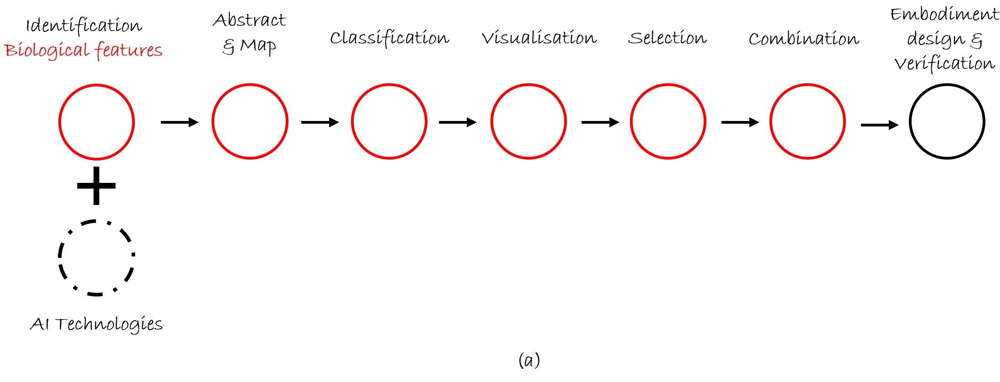
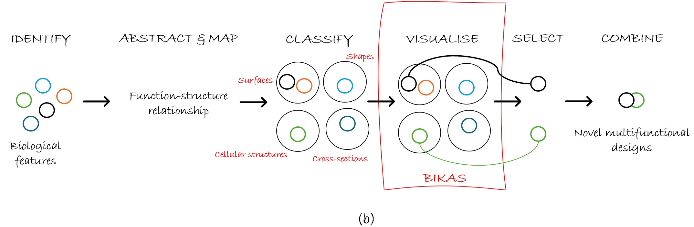

BIRD'S-EYE VIEW OF MBID ARCHITECTURE
As illustrated in Figure 2(a), the MBID ideation system provides a structured process bridging early-stage problem definition and embodiment design with functional verification.
Figure 2(b) outlines the key components of the system: identification, abstraction and mapping,
function - structure relationships, classification, visualisation, selection, and combination.
To explore these components in greater depth,
click on the design method developed as part of the system,
known as Expandable Domain Integrated Design (xDID)


Figure 2: (a) The MBID ideation system as a structured process bridging early-stage problem definition and embodiment design with functional verification.
(b) Key components of the system, including: identification, abstraction and mapping of
biological principles, function - structure relationships, classification, visualisation,
selection, and combination, which collectively drive the generation of novel multifunctional design concepts.
VISUALISE BIKAS
This web application features a tree dendrogram visualization of the BIKAS database—an evolving repository of over 60 biological (morphological)
features that have been abstracted, mapped, and classified based on their structural characteristics.
BIKAS (Biologically Inspired Knowledge Acquisition and Simulacrum) serves as the core knowledge base for the MBID framework.
The denrograms represent a hierarchical clustering of morphological features, using an approach analogous to agglomerative clustering.
Fetures are grouped based on shared geometric characteristics/designation, allowing users to intuitively navigate and select combinations for multifunctional design applications.
Explore the dendrograms by clicking on geometric categories (DOMAINS)
to reveal related biological features and their connections
USER MANUAL
Use the dendrograms and apply MBID
to generate multifuncitonal designs
CONTACT
Feel free to reach out for collaboration, queries, or feedback
Pavan Tejaswi Velivela, PhD
email at: pavan.velivela@mail.mcgill.ca
portfolio at: portfolio
Professor Yaoyao Fiona Zhao
Director & Supervisor, ADML
Department of Mechanical Engineering
email at: yaoyao.zhao@mcgill.ca
Additive Design and Manufacturing Lab (ADML)
McGill University
Macdonald Engineering Building Room 53
817 Sherbrooke Street West
Montréal, QC H3A 0C3, Canada
Visit us at: https://adml.lab.mcgill.ca/
Copyright © 2025 ADML McGILL University. All rights reserved.